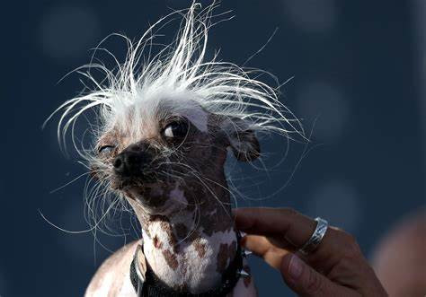
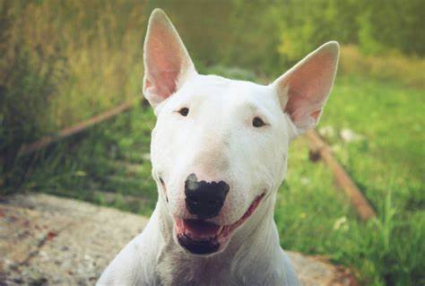

Dog 1
Super amorroso!
Dog 2
Super estilosa!
Dog 3
Super feliz!
Random Texts
Um amor leve, sincero, peludo e que transborda fidelidade. Confio mais nesse serzinho de quatro patas do que em muitos de duas pernas. Uma lambida e um abanar de rabo que salva o dia. Quem tem o amor de um companheirinho, tem tudo! Os cachorros são como os humanos, mas sem a parte ruim.
Um amor leve, sincero, peludo e que transborda fidelidade. Confio mais nesse serzinho de quatro patas do que em muitos de duas pernas. Uma lambida e um abanar de rabo que salva o dia. Quem tem o amor de um companheirinho, tem tudo! Os cachorros são como os humanos, mas sem a parte ruim.
Um amor leve, sincero, peludo e que transborda fidelidade. Confio mais nesse serzinho de quatro patas do que em muitos de duas pernas. Uma lambida e um abanar de rabo que salva o dia. Quem tem o amor de um companheirinho, tem tudo! Os cachorros são como os humanos, mas sem a parte ruim.
Um amor leve, sincero, peludo e que transborda fidelidade. Confio mais nesse serzinho de quatro patas do que em muitos de duas pernas. Uma lambida e um abanar de rabo que salva o dia. Quem tem o amor de um companheirinho, tem tudo! Os cachorros são como os humanos, mas sem a parte ruim.